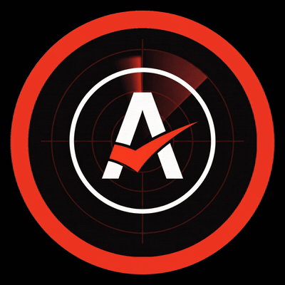
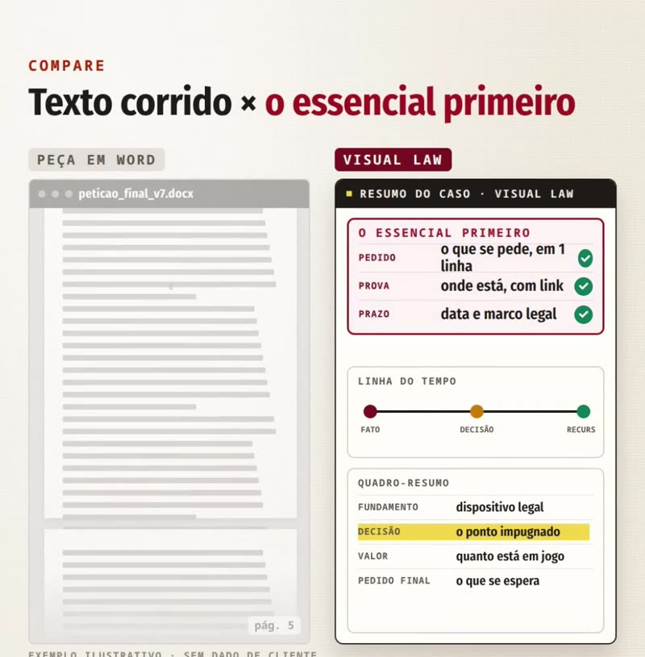
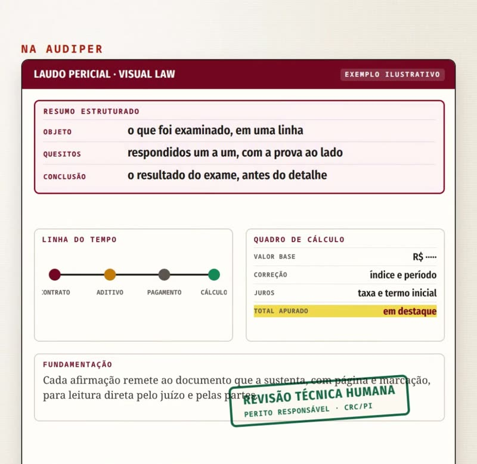

O STJ passou a exigir resumo. O Prof. Ricardo explica
Visual law e o resumo que o STJ passou a exigir
O que mudou no Regimento do STJ, o que o CNJ recomenda sobre linguagem simples e como isso chega aos laudos e pareceres que acompanham a peça.
Desde julho de 2026, quem leva uma ação originária ou um recurso ao Superior Tribunal de Justiça precisa abrir a peça com um resumo estruturado. Não é uma recomendação de estilo: está no Regimento Interno.
A exigência muda a forma de escrever. E muda também o que se espera dos documentos técnicos que sustentam o pedido: um laudo de cem páginas sem um resumo claro joga no colo de quem lê o trabalho de achar o essencial.
O que mudou, em três marcos
Recomendação nº 144/2023, art. 1º
Recomenda aos tribunais e conselhos linguagem simples, clara e acessível e, sempre que possível, elementos visuais que facilitem a compreensão da informação.
Pacto Nacional · Linguagem SimplesEmenda Regimental nº 53/2026: o art. 343-A
Inclui no Regimento Interno a exigência de resumo estruturado nas petições iniciais de ações originárias e nos recursos.
Em vigor desde 01/07/2026Instrução Normativa STJ nº 42/2026
Traz as regras de aplicação da exigência.
Texto corrido × o essencial primeiro
A mesma informação pode chegar de dois jeitos. A diferença não está no conteúdo, e sim na ordem em que ele aparece.
Páginas de texto corrido
- o pedido aparece no fim
- a prova fica espalhada entre parágrafos
- prazos e marcos exigem releitura
O essencial na primeira tela
- resumo: pedido, prova e prazo
- linha do tempo dos fatos
- quadro-resumo com fundamento e valor

Como isso chega ao laudo e ao parecer
Na AUDÍPER, laudos e pareceres técnicos são entregues com resumo estruturado e visual law: objeto, quesitos e conclusão logo no início, linha do tempo, quadro de cálculo e, em cada afirmação, a indicação do documento que a sustenta. A tecnologia ajuda a organizar; a revisão é do perito responsável.

Perícia e auditoria
Experiência técnica com responsabilidade profissional desde a fundação.
Resumo estruturado
Objeto, quesitos e conclusão antes do detalhe.
Revisão humana
Cada afirmação conferida pelo perito, com página e marcação do documento.
Não é advogado? Encaminhe este vídeo ao seu.
Encaminhar pelo WhatsAppPerguntas frequentes
O que o STJ passou a exigir?
Resumo estruturado nas petições iniciais de ações originárias e nos recursos, conforme a Emenda Regimental nº 53/2026, que incluiu o art. 343-A no Regimento Interno do STJ. As regras de aplicação estão na Instrução Normativa STJ nº 42/2026.
O que o CNJ recomenda sobre linguagem?
A Recomendação CNJ nº 144/2023, no art. 1º, recomenda aos tribunais e conselhos o uso de linguagem simples, clara e acessível e, sempre que possível, de elementos visuais que facilitem a compreensão da informação.
Visual law substitui o laudo técnico?
Não. O visual law organiza a apresentação: resumo estruturado, linha do tempo e quadros. O conteúdo técnico, a memória de cálculo e a responsabilidade continuam do perito, que revisa cada afirmação e indica o documento que a sustenta.
Laudos e pareceres com resumo e visual law
Perícia contábil e assistência técnica com resumo estruturado, linha do tempo e trilha até o documento de origem, revisados pelo perito responsável.
Falar com um perito (86) 9 9401-0525 · atendimento em horário comercialProf. Ricardo Ribeiro · Auditor Supervisor · Perito · Mestre em Contabilidade (UnB) · CRC/PI 5374/O
Fontes: ConJur, 09/07/2026 (Emenda Regimental nº 53/2026 e art. 343-A do RISTJ; IN STJ nº 42/2026); CNJ, Recomendação nº 144/2023, art. 1º (atos.cnj.jus.br). Vídeo produzido com inteligência artificial, com autorização do Prof. Ricardo Ribeiro. Documentos exibidos são exemplos ilustrativos, sem dados de clientes.